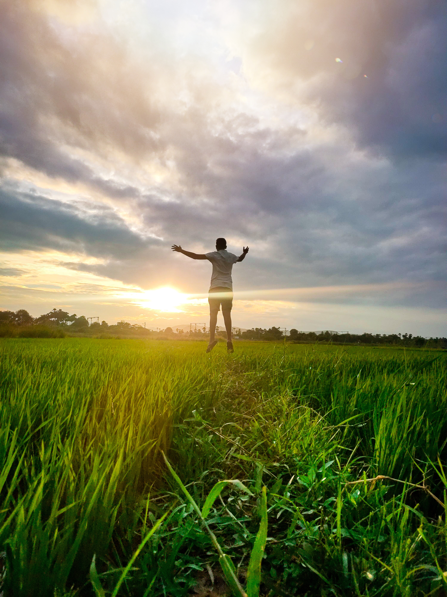
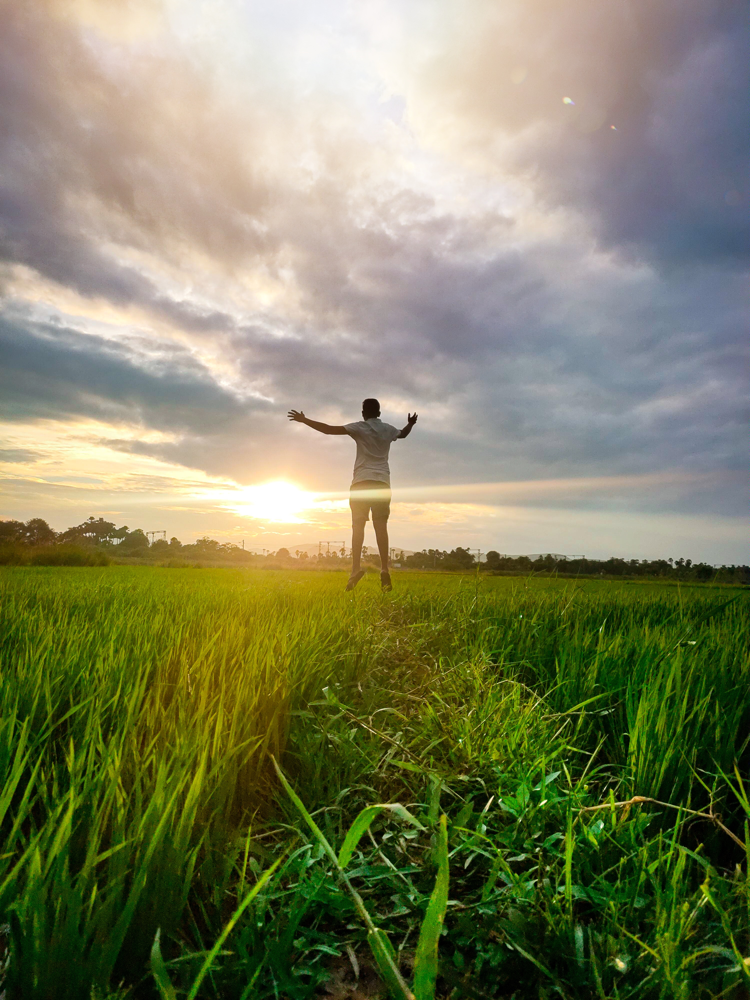
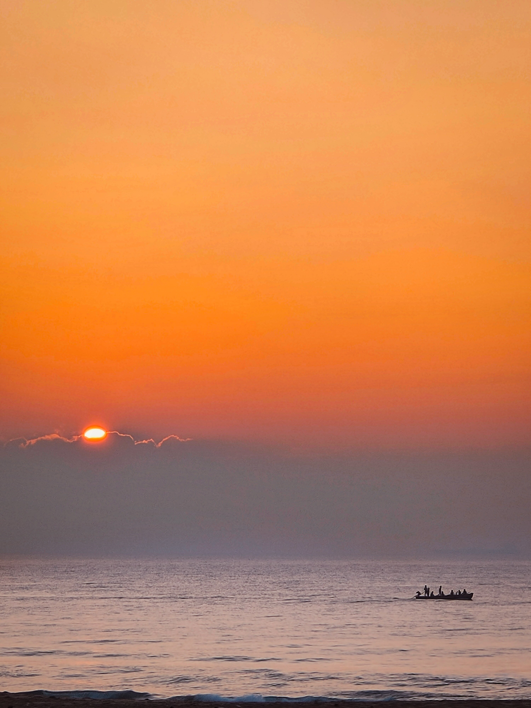
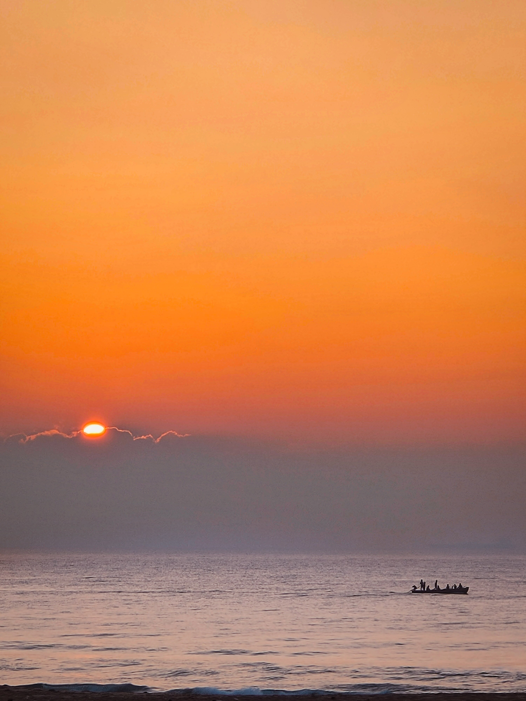

I'm Manideep.
A Hodophile.


Iam new to this programming world, but certainy i'm improving myself.
I had tried out some Photography styles such as potrait,product,travel and lifestyle Photography, i used to take pictures with my mobile phone however,Photography equipment is not at all important light,subject,emotion and composition are all critical elements of a successfull photograph.
Here are my some photographs taken by me
 

 


It sounds funny but,preparing food includes knowledge about food nutrition and planning(i.e. organizing meals,food preparation on budget)cooking saves you money. ...you can understand how much money can be saved by cooking one's meal instead of eating at a restuarant.
lets talk about how awesome it is!
CONTACT ME